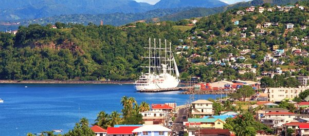

Народности
Численность населения — 74 243 (оценка на июль 2020)[5]. Согласно переписи населения в 2011 году проживало 71 293 человека, из них 36 411 мужчины и 34 882 женщины[9].
Годовой прирост — 0,13 % (высокий уровень эмиграции из страны)[5].
Средняя продолжительность жизни — 75 лет у мужчин, 81 год у женщин[5].
Городское население — 71,1 %[5].
Грамотность взрослого населения — 94 % (оценка 2003).
Этно-расовый состав: негры — 86,8 %, мулаты — 8,9 %, индейцы-карибы — 2,9 %, белые — 0,8 %, другие — 0,7 % (по переписи 2001 года).
Религии: католики — 61,4 %, адвентисты седьмого дня — 6 %, пятидесятники — 5,6 %, баптисты — 4,1 %, методисты — 3,7 %, церковь Бога — 1,2 %, свидетели Иеговы — 1,2 % (2,10 %[источник не указан 2917 дней] на 2011 год), другие христиане — 7,7 %, растафариане — 1,3 %, другие — 1,6 %, атеисты — 6,1 % (по переписи 2001 года).
Государственный язык — английский, распространён также патуа — местный креольский диалект на основе французского. Кроме английских, на острове много французских топонимов
Факты
Домини́ка (англ. Dominica [dəˈmɪnɨkə], местн. [ˌdɒmɪˈniːkə]), Содру́жество Домини́ки (англ. Commonwealth of Dominica) — государство на одноимённом острове из группы Малых Антильских островов (Наветренные острова) в Карибском море. К северо-западу от Доминики расположена Гваделупа, к юго-востоку — Мартиника. Площадь территории — 751 км², население — 74 243 жителей (оценка 2020 года). Столица — город Розо (англ. Roseau).
Климат
Особенности: экзотическая флора и фауна, потухшие вулканы, пляжи с вулканическим песком, горячие источники, гейзеры.
В Глобальном индексе программ инвестиционного гражданства занимает 8-е место в мире.
Безвизовый режим с 112 государствами, в том числе с Великобританией и странами ЕС